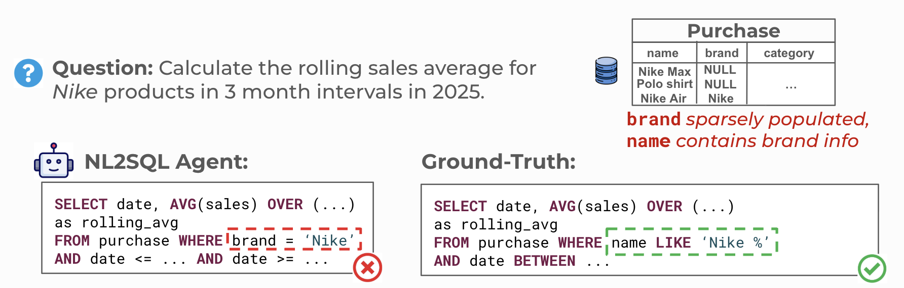
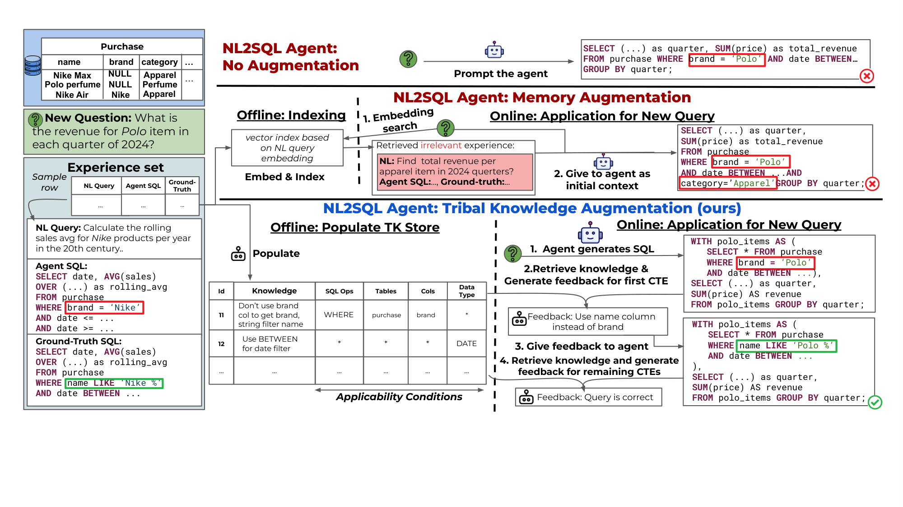
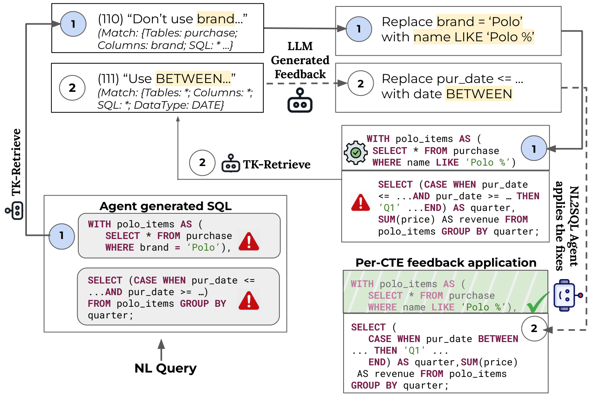
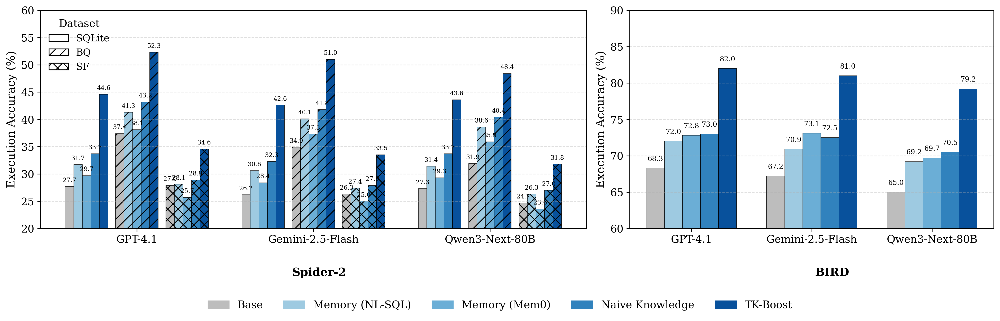
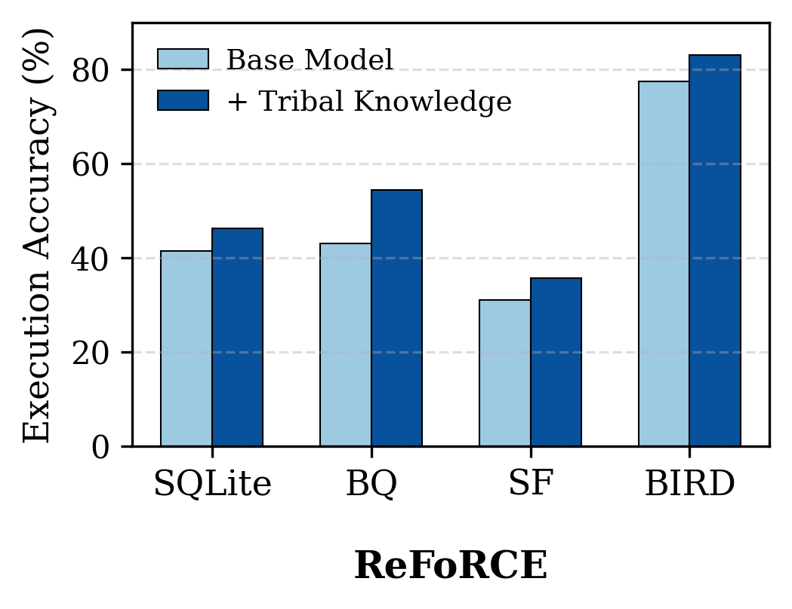
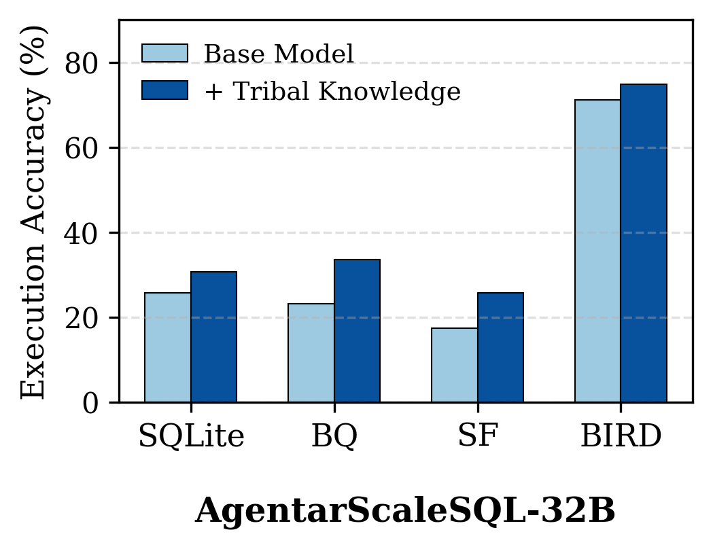

Arming Data Agents with Tribal Knowledge
🔴 Fluent SQL ≠ Correct SQL

brand) and the corrective tribal knowledge.NL2SQL agents have made natural-language interfaces to databases far more practical. Today's agents can explore schemas, issue intermediate queries, and iteratively refine SQL before producing a final answer. Despite this progress, execution accuracy on realistic benchmarks remains surprisingly low.
The main failure mode observed is not syntax or query planning, but rather misunderstanding the data.
Consider a simple example. A purchase table contains both brand and name columns. The brand column was added later and is sparsely populated, while the name column reliably contains the brand as a prefix (e.g., “Nike Air Max”). Humans quickly learn to filter using:
WHERE name LIKE 'Nike %'NL2SQL agents repeatedly use:
WHERE brand = 'Nike'This error reappears across many queries. These recurring logical errors — caused by missing knowledge about what data should be selected and how it should be used — are what we call misconceptions.
❌ Naive Approaches

Two natural ideas have emerged to improve agents:
- Memory / trajectory reuse — Retrieve past queries and include them in the prompt.
- Facts about the database — Ask LLMs to generate natural-language facts that clarify data nuances.
In practice, both approaches fall short.
Memory retrieval often surfaces irrelevant past queries and can even introduce new errors. “Facts” about the database restate schema and content but rarely correct how the agent uses the data. Moreover, even if the right information is retrieved, the agent must be properly fed the information in order to correct its mistakes.
🧠 Tribal Knowledge
Human analysts learn databases through experience. Over time they accumulate rules like:
- “Don't trust this column for filtering — it has many NULL values.”
- “Column
brand_ccontains clean data from columnbrand.” - “Apply window computation logic after filtering date ranges instead of before.”
These knowledge statements come from mistakes made in the past and are used to prevent or correct future mistakes on the data. We call this tribal knowledge: reusable natural-language statements that correct recurring misconceptions.
TK-Boost is a bolt-on framework that allows NL2SQL agents to acquire and use this knowledge. It defines both a mechanism for discovering and applying knowledge for NL2SQL agents.
⚙️ Overview of TK-Boost
TK-Boost operates in two phases.
Offline: Knowledge Discovery
Using a small set of labeled queries and the agent's translation attempts, the mistakes are identified and iteratively corrected one clause at a time. Each correction is converted into a reusable knowledge statement alongside an applicability condition which defines what SQL contexts the statement should be used in.
Online: Corrective Augmentation
When answering new queries, the agent first generates a SQL draft. TK-Boost then retrieves relevant knowledge using the current draft and provides targeted feedback to fix errors before the final SQL is produced. Correcting after generation is key: knowledge is applied only when relevant mistakes appear.
🔍 Retrieval and CTE-Level Correction

Applying knowledge reliably requires precise retrieval.
Instead of retrieving knowledge from the natural-language query, TK-Boost retrieves it from the agent's SQL draft using structured features that define an applicability condition:
- SQL keywords
- Tables
- Columns
- Data types
Knowledge is then applied one CTE at a time, enabling precise corrections for complex queries.
📊 Results

We evaluate TK-Boost on Spider 2.0 and BIRD across multiple NL2SQL agents and models.
Improvement substantially exceeds memory and naive knowledge baselines.
In addition, TK-Boost works as a bolt-on augmentation for existing agents. We select two of the leading open-source solutions for the Spider 2.0 and BIRD benchmarks in ReFORCE and Agentar-Scale SQL respectively.


For each method, we insert tribal knowledge in a post-generation refinement step and observe the results. Bolt-on gains on state-of-the-art agents: ReFORCE and Agentar-Scale SQL both improve when augmented with tribal knowledge.
For more details on our experiment setup and baselines, please refer to our paper.
💡 Takeaway
The Key Insight
NL2SQL agents already know how to write SQL. What they lack is experience using real databases.
Tribal knowledge provides a mechanism for agents to learn from past mistakes and reuse those lessons for future queries.
📄 Cite
If you use TK-Boost in your work, please cite:
@article{agarwal2026tkboost,
title = {Arming Data Agents with Tribal Knowledge},
author = {Agarwal, Shubham and Biswal, Asim and Zeighami, Sepanta and
Cheung, Alvin and Gonzalez, Joseph and Parameswaran, Aditya G.},
journal = {arXiv preprint arXiv:2602.13521},
year = {2026}
}